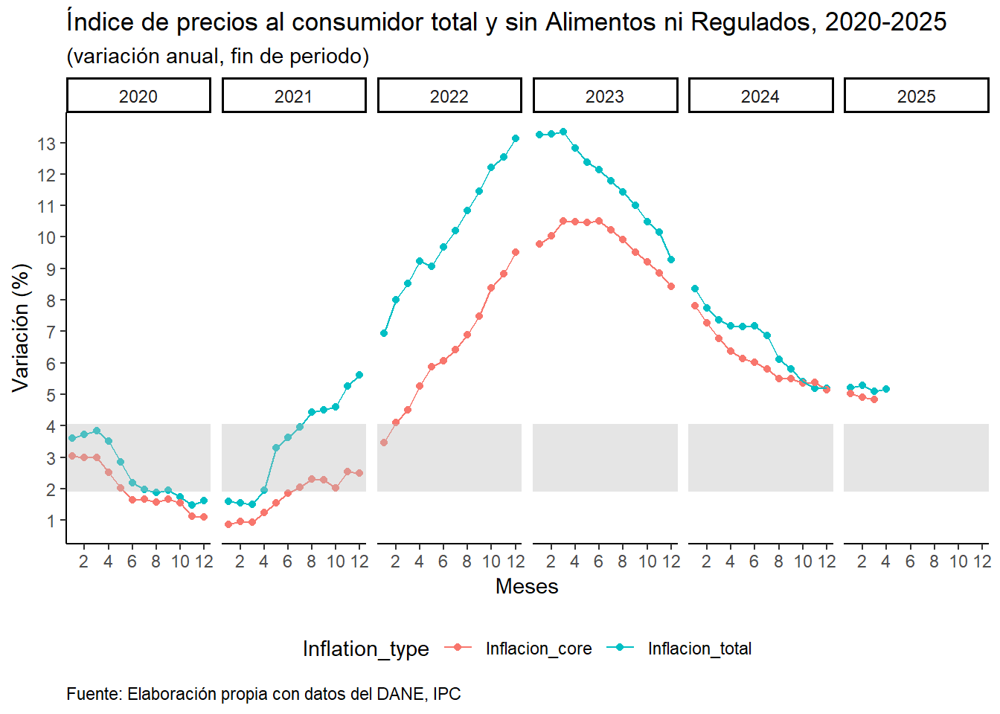

library(readxl)
library(tidyverse)CPI Colombia
Total and Core inflation
This document describes the process of building different line graphs of the evolution of total and core inflation (without foods, energy and other regulated) according to the Consumer Price Index (CPI) in Colombia which is made public by the Departamento Administrativo Nacional de Colombia (DANE).
The first step is to load the following libraries:
Load data
Now, we are loading total inflation data:
data = read_excel("IPC_2020_2024.xlsx")
data# A tibble: 12 × 7
Mes `2020` `2021` `2022` `2023` `2024` `2025`
<dbl> <dbl> <dbl> <dbl> <dbl> <dbl> <dbl>
1 1 3.62 1.60 6.94 13.3 8.35 5.22
2 2 3.72 1.56 8.00 13.3 7.74 NA
3 3 3.85 1.51 8.53 13.3 7.37 NA
4 4 3.51 1.95 9.23 12.8 7.17 NA
5 5 2.85 3.30 9.06 12.4 7.15 NA
6 6 2.20 3.63 9.68 12.1 7.18 NA
7 7 1.97 3.97 10.2 11.8 6.86 NA
8 8 1.87 4.44 10.8 11.4 6.12 NA
9 9 1.97 4.51 11.4 11.0 5.81 NA
10 10 1.74 4.59 12.2 10.5 5.41 NA
11 11 1.49 5.25 12.5 10.1 5.20 NA
12 12 1.62 5.62 13.1 9.28 5.20 NA Then we load the core inflation data:
datacore = read_excel("IPC_2020_2024_sinAliniReg.xlsx")
datacore# A tibble: 60 × 3
Año Mes Inflacion_core
<dbl> <dbl> <dbl>
1 2020 1 3.04
2 2020 2 3
3 2020 3 2.99
4 2020 4 2.51
5 2020 5 2.03
6 2020 6 1.65
7 2020 7 1.66
8 2020 8 1.57
9 2020 9 1.67
10 2020 10 1.55
# ℹ 50 more rowsNow we are going to reshape the total inflation’s database in order to represent individual values by a single row (stacked). In addition, because of symmetry we are going to represent the year variable as a numeric type with the names_transform function of pivot_longer:
data = pivot_longer(data, cols = 2:7, names_to = "Año",
values_to = "Inflacion_total",
names_transform = list("Año" = as.numeric))
data# A tibble: 72 × 3
Mes Año Inflacion_total
<dbl> <dbl> <dbl>
1 1 2020 3.62
2 1 2021 1.60
3 1 2022 6.94
4 1 2023 13.3
5 1 2024 8.35
6 1 2025 5.22
7 2 2020 3.72
8 2 2021 1.56
9 2 2022 8.00
10 2 2023 13.3
# ℹ 62 more rowsNow you can see with the help of the str function that all the variables are numeric:
str(data)tibble [72 × 3] (S3: tbl_df/tbl/data.frame)
$ Mes : num [1:72] 1 1 1 1 1 1 2 2 2 2 ...
$ Año : num [1:72] 2020 2021 2022 2023 2024 ...
$ Inflacion_total: num [1:72] 3.62 1.6 6.94 13.25 8.35 ...str(datacore)tibble [60 × 3] (S3: tbl_df/tbl/data.frame)
$ Año : num [1:60] 2020 2020 2020 2020 2020 2020 2020 2020 2020 2020 ...
$ Mes : num [1:60] 1 2 3 4 5 6 7 8 9 10 ...
$ Inflacion_core: num [1:60] 3.04 3 2.99 2.51 2.03 1.65 1.66 1.57 1.67 1.55 ...Since core inflation’s data is lagged 1 period regarding to total inflation, we are joining both databases with left_join function of dplyr:
data2 = left_join(data, datacore, by = join_by(Año, Mes))
data2# A tibble: 72 × 4
Mes Año Inflacion_total Inflacion_core
<dbl> <dbl> <dbl> <dbl>
1 1 2020 3.62 3.04
2 1 2021 1.60 0.87
3 1 2022 6.94 3.47
4 1 2023 13.3 9.77
5 1 2024 8.35 7.82
6 1 2025 5.22 NA
7 2 2020 3.72 3
8 2 2021 1.56 0.96
9 2 2022 8.00 4.11
10 2 2023 13.3 10.0
# ℹ 62 more rowsAs before, we are reshaping the data to the long or stacked format:
data2 = pivot_longer(data2, cols = 3:4, names_to = "Inflation_type",
values_to = "value")
data2# A tibble: 144 × 4
Mes Año Inflation_type value
<dbl> <dbl> <chr> <dbl>
1 1 2020 Inflacion_total 3.62
2 1 2020 Inflacion_core 3.04
3 1 2021 Inflacion_total 1.60
4 1 2021 Inflacion_core 0.87
5 1 2022 Inflacion_total 6.94
6 1 2022 Inflacion_core 3.47
7 1 2023 Inflacion_total 13.3
8 1 2023 Inflacion_core 9.77
9 1 2024 Inflacion_total 8.35
10 1 2024 Inflacion_core 7.82
# ℹ 134 more rowsTotal inflation
shadedarea <- 3 #Targeting inflation by Colombian Central bank
ggplot(data) +
geom_point(aes(x = Mes, y = Inflacion_total)) +
geom_line(aes(x = Mes, y = Inflacion_total)) +
geom_hline(yintercept = shadedarea, color = "grey", lwd = 20, alpha = 0.4) +
facet_grid( . ~ Año) +
scale_x_continuous(breaks = seq(0,12, by=2)) +
scale_y_continuous(breaks = seq(0,15, by=1)) +
theme_classic() +
labs(title = "Índice de precios al consumidor, 2020-2025",
subtitle = "(variación anual, fin de periodo)",
x = "Meses",
y = "Variación (%)",
caption = "Fuente: Elaboración propia con datos del DANE, IPC") +
theme(plot.caption.position = "panel",
plot.caption = element_text(hjust = 0))
Core inflation
shadedarea <- 3 #Targeting inflation by Colombian Central bank
ggplot(datacore) +
geom_point(aes(x = Mes, y = Inflacion_core)) +
geom_line(aes(x = Mes, y = Inflacion_core)) +
geom_hline(yintercept = shadedarea, color = "grey", lwd = 22, alpha = 0.4) +
facet_grid( . ~ Año) +
scale_x_continuous(breaks = seq(0,12, by=2)) +
scale_y_continuous(breaks = seq(0,12, by=1)) +
theme_classic() +
labs(title = "Índice de precios al consumidor sin alimentos ni regulados, 2020-2024",
subtitle = "(variación anual, fin de periodo)",
x = "Meses",
y = "Variación (%)",
caption = "Fuente: Elaboración propia con datos del DANE, IPC") +
theme(plot.caption.position = "panel",
plot.caption = element_text(hjust = 0))Total and core inflation
shadedarea <- 3 #Targeting inflation by Colombian Central bank
ggplot(data2) +
geom_point(aes(x = Mes, y = value, colour = Inflation_type)) +
geom_line(aes(x = Mes, y = value, colour = Inflation_type)) +
geom_hline(yintercept = shadedarea, color = "grey", lwd = 16, alpha = 0.4) +
facet_grid( . ~ Año) +
scale_x_continuous(breaks = seq(0,12, by=2)) +
scale_y_continuous(breaks = seq(0,14, by=1)) +
theme_classic() +
labs(title = "Índice de precios al consumidor total y sin Alimentos ni Regulados, 2020-2025",
subtitle = "(variación anual, fin de periodo)",
x = "Meses",
y = "Variación (%)",
caption = "Fuente: Elaboración propia con datos del DANE, IPC") +
theme(plot.caption.position = "panel",
plot.caption = element_text(hjust = 0),
legend.position = "bottom")
Conclusion
As you can see in the hard years of the pandemic (2020, 2021) the inflation measurements remained quite stable in the targeting inflation policy by the independent Colombian central bank: Banco de la República (Banrep) or even a few periods below the targeting (represented by the gray shaded area). Although the following years due to the rebound effect of the national economy, we are still observing high inflation in the goods and services of the economy. This is an ongoing concern because this not only affect households, but also companies, governments and other agents in the economy. In other hand, the Colombian Banrep board of directors are expecting the return of the targeting inflation in the year 2025 according to the last minutes.